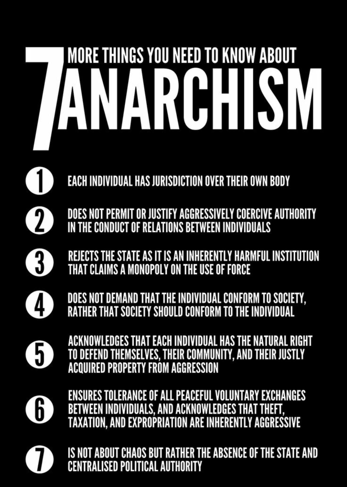

Anarchy vs. Dictatorship
Argument 1: CLaire
Argument 2 Anarchy: Megan
"Anarchy" has a messaging problem. What many anarchists have in mind is very different from what the word connotes to most people. The Greek root "archos" means "ruler", and an "anarchy" is a society without leaders.
But that doesn't mean that it's without rules. A perfect direct democracy doesn't need any leaders. Every decision is decided by the people. Many successful cooperatives operate on these anarchic principles.
Communes for example are a great example of working anarchism.
It's actually not all that different from a corporation, where no one person is rich enough to own a factory so a number of people work together. Take that to an extreme, where everybody who works there has an equal piece, and you have a collective. Thus, anarchism exists in a sort of space between socialism and libertarianism.
In many ways, anarchy is exactly how the world operates already. There's no authority behind international law, just a collective agreement to follow whatever treaties you've signed. Enforcement is limited to what you can do to each other, and what you can convince your friends to do for you. International courts are a recent innovation and have minimal power; there isn't anything close to a "king of the world" or even a "parliament of the world". Anarchy is really about scaling the same principles down to local levels.
It's not without problems, but then, no system is without problems. Anarchist movements arise in response to intolerable systems within countries, where power (either from wealth or state) is abused. Anarchist movements have attracted some crazies, but every movement attracts crazies, and you shouldn't judge the validity of their ideas based on them.
While democracy is "all about the people" it is really just all about the politics. Anarchy however is the only truely "for the people" movement.
